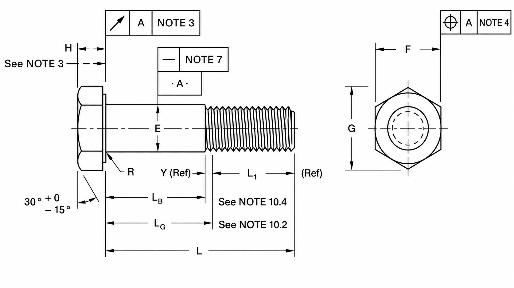

Perno Cabeza Hexagonal Estructural

| Tamaño Nominal o Diámetro Básico del Producto | E | F | G | H | R | LT | Y | Descentramiento | ||||||||
|---|---|---|---|---|---|---|---|---|---|---|---|---|---|---|---|---|
| Diámetro del Cuerpo Máx |
Diámetro del Cuerpo Mín |
Ancho Entre Caras Básico |
Ancho Entre Caras Máx |
Ancho Entre Caras Mín |
Ancho Entre Vértices Máx |
Ancho Entre Vértices Mín |
Altura de la Cabeza Básico |
Altura de la Cabeza Máx |
Altura de la Cabeza Mín |
Radio del Entallado Máx |
Radio del Entallado Mín |
Longitud de Rosca Básico |
Rosca de Transición Máx |
Superficie de Apoyo (FIM) Máx |
||
| 1/2 | 0.5000 | 0.515 | 0.482 | 7/8 | 0.875 | 0.850 | 1.010 | 0.969 | 5/16 | 0.323 | 0.302 | 0.031 | 0.009 | 1.00 | 0.19 | 0.016 |
| 5/8 | 0.6250 | 0.642 | 0.605 | 1-1/16 | 1.062 | 1.031 | 1.227 | 1.175 | 25/64 | 0.403 | 0.378 | 0.062 | 0.021 | 1.25 | 0.22 | 0.019 |
| 3/4 | 0.7500 | 0.768 | 0.729 | 1-1/4 | 1.250 | 1.212 | 1.443 | 1.383 | 15/32 | 0.483 | 0.455 | 0.062 | 0.021 | 1.38 | 0.25 | 0.022 |
| 7/8 | 0.8750 | 0.895 | 0.852 | 1-7/16 | 1.438 | 1.394 | 1.660 | 1.589 | 35/64 | 0.563 | 0.531 | 0.062 | 0.031 | 1.50 | 0.28 | 0.025 |
| 1 | 1.0000 | 1.022 | 0.976 | 1-5/8 | 1.625 | 1.575 | 1.876 | 1.796 | 39/64 | 0.627 | 0.591 | 0.093 | 0.062 | 1.75 | 0.31 | 0.028 |
| 1-1/8 | 1.1250 | 1.149 | 1.098 | 1-13/16 | 1.812 | 1.756 | 2.093 | 2.002 | 11/16 | 0.718 | 0.658 | 0.093 | 0.062 | 2.00 | 0.34 | 0.032 |
| 1-1/4 | 1.2500 | 1.277 | 1.223 | 2 | 2.000 | 1.938 | 2.309 | 2.209 | 25/32 | 0.813 | 0.749 | 0.093 | 0.062 | 2.00 | 0.38 | 0.035 |
| 1-3/8 | 1.3750 | 1.404 | 1.345 | 2-3/16 | 2.188 | 2.119 | 2.526 | 2.416 | 27/32 | 0.878 | 0.810 | 0.093 | 0.062 | 2.25 | 0.44 | 0.038 |
| 1-1/2 | 1.5000 | 1.531 | 1.470 | 2-3/8 | 2.375 | 2.300 | 2.742 | 2.622 | 15/16 | 0.974 | 0.902 | 0.093 | 0.062 | 2.25 | 0.44 | 0.041 |
| Ver Notas: 15, 16 | 5 | 2 | 10.3 | 10.5 | 3 | |||||||||||